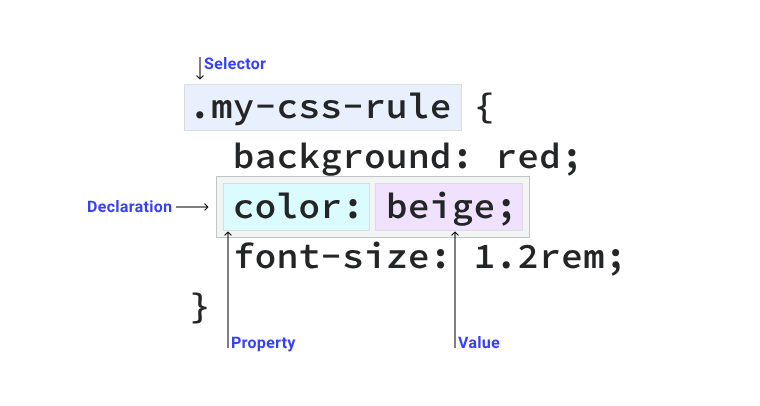

O seletor asterisco é o seletor universal que aplica o estilo a todos os elemento da página.

O seletor TAG escolhe os elementos que correspondem ao nome fornecido
Escolhe baseado no valor atribuido ao ID. Deve existir apenas um elemento com o ID no documento.
O seletor classe escolhe o elemento baseado no valor definido no atributo classe
O seletor asterisco é o seletor universal que aplica o estilo a todos os elemento da página.